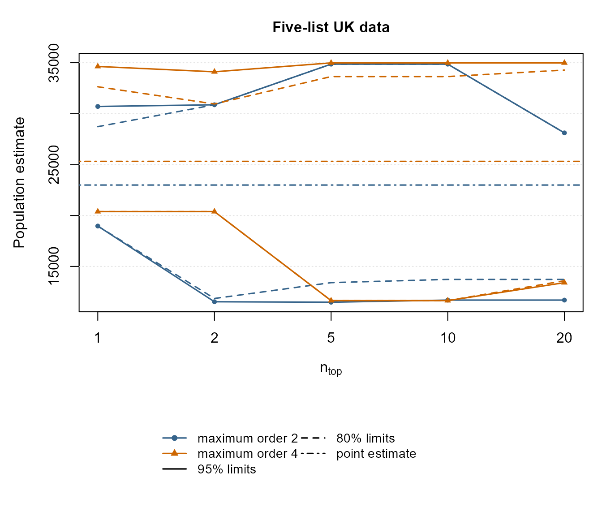
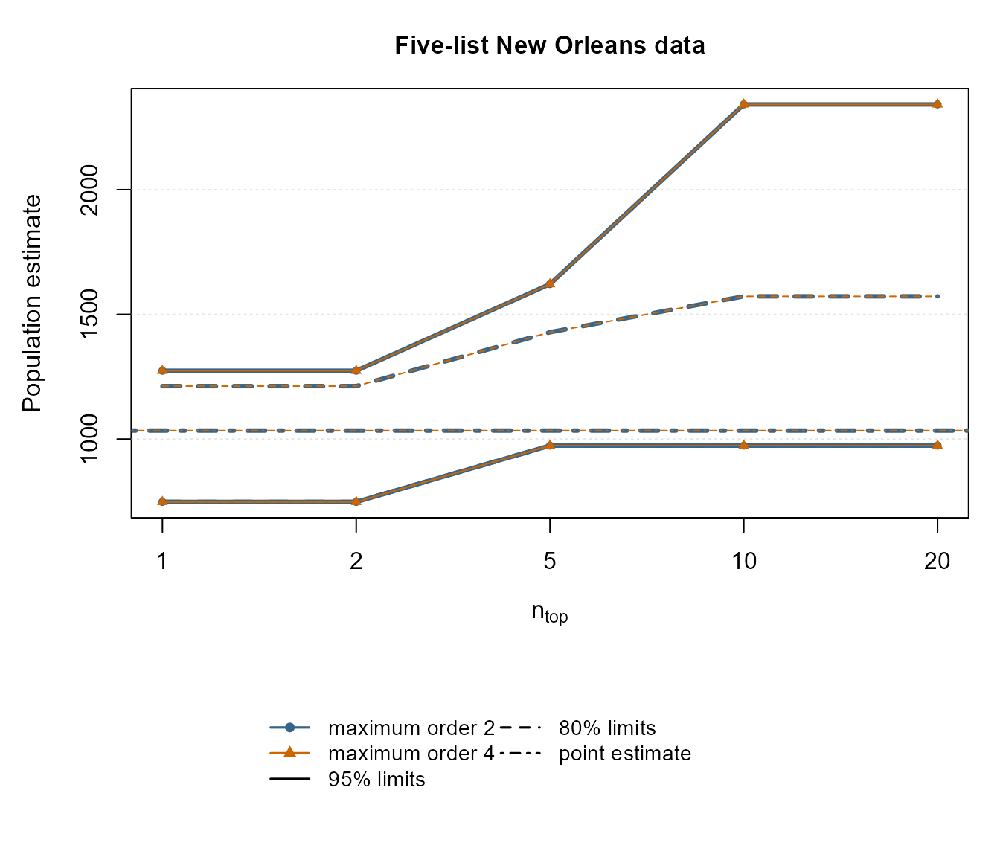
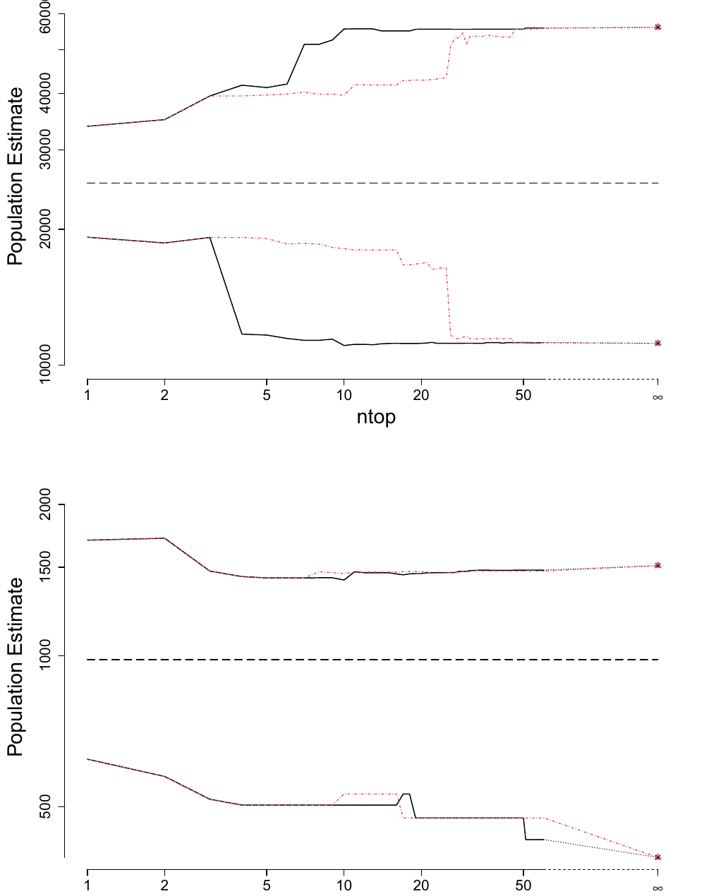

Reproducing Silverman, Chan and Vincent (2024)
Bernard W. Silverman
reproduce-2024.RmdIntroduction
This vignette gives reproducibility code for the numerical results in
Silverman, B. W., Chan, L. and Vincent, K. (2024). Bootstrapping multiple systems estimates to account for model selection, Statistics and Computing 34, 44.
The calculations use the current
MultipleSystemsEstimation interface.
There are two intended ways to use the vignette. In the version built
with the package, full_reproduction is FALSE.
This uses nboot = 10 and restricts the more expensive
five-list finite searches to modest values of ntop: 20 for
the ordinary ranking and 10 for the degree-2 ranking. These settings are
enough to exercise the current code, produce the figures and tables in
reduced-precision form, and keep an ordinary package or CRAN vignette
build reasonably quick. They are not intended to reproduce the published
Monte Carlo values exactly.
For a closer numerical reproduction of the paper, change
full_reproduction <- TRUEin the setup chunk. This uses nboot = 1000, the value
used for the paper, and extends the finite five-list calculations to
ntop = 60. Calculations requiring an exhaustive search over
all five-list candidate models remain deliberately excluded from an
ordinary vignette build; where those results are required, the published
values are given and the code needed to recompute them is shown with
eval = FALSE. Such exhaustive calculations can take
substantially longer.
Table 1 of the paper is not reproduced. It illustrates the issue of
existence of the extended maximum likelihood estimate rather than
providing a numerical application. The package function
check_identifiability() provides the corresponding
diagnostic.
Helper functions
pick_ntop <- function(x, values) {
out <- x$inference[x$inference$ntop %in% values, , drop = FALSE]
out[match(values, out$ntop), , drop = FALSE]
}
ci_text <- function(lo, hi, rounding = 1) {
lo <- round(lo / rounding) * rounding
hi <- round(hi / rounding) * rounding
paste0("[", lo, ", ", hi, "]")
}
finite_at <- function(max_ntop) {
z <- c(1, 2, 5, 10, 20, 50, 60)
z[z <= max_ntop]
}
plot_ntop_set <- function(x, at, col, pch, lwd = 1.6) {
z <- x[x$ntop %in% at, , drop = FALSE]
z <- z[match(at, z$ntop), , drop = FALSE]
xx <- seq_along(at)
lines(xx, z[["0.025"]], lty = 1, col = col, lwd = lwd)
lines(xx, z[["0.975"]], lty = 1, col = col, lwd = lwd)
points(xx, z[["0.025"]], col = col, pch = pch, cex = 0.75)
points(xx, z[["0.975"]], col = col, pch = pch, cex = 0.75)
if (all(c("0.1", "0.9") %in% names(z))) {
lines(xx, z[["0.1"]], lty = 2, col = col, lwd = lwd)
lines(xx, z[["0.9"]], lty = 2, col = col, lwd = lwd)
}
}
plot_two_ntop_bands <- function(x2, est2, x4, est4, at, main,
lwd2 = 1.6, lwd4 = 1.6) {
z2 <- x2[x2$ntop %in% at, , drop = FALSE]
z2 <- z2[match(at, z2$ntop), , drop = FALSE]
z4 <- x4[x4$ntop %in% at, , drop = FALSE]
z4 <- z4[match(at, z4$ntop), , drop = FALSE]
ylim <- range(
z2[["0.025"]], z2[["0.975"]], est2,
z4[["0.025"]], z4[["0.975"]], est4,
finite = TRUE
)
xx <- seq_along(at)
plot(
xx, rep(NA_real_, length(xx)),
type = "n",
xaxt = "n",
xlab = expression(n[top]),
ylab = "Population estimate",
ylim = ylim,
main = main,
cex.main = 1.05,
cex.lab = 1.05
)
axis(1, at = xx, labels = at)
grid(nx = NA, ny = NULL, lty = 3, col = "grey90")
plot_ntop_set(x2, at, "steelblue4", 16, lwd = lwd2)
plot_ntop_set(x4, at, "darkorange3", 17, lwd = lwd4)
abline(h = est2, lty = 4, col = "steelblue4", lwd = lwd2)
abline(h = est4, lty = 4, col = "darkorange3", lwd = lwd4)
}
legend_two_ntop_bands <- function() {
plot.new()
legend(
"center",
legend = c(
"maximum order 2", "maximum order 4",
"95% limits", "80% limits", "point estimate"
),
col = c(
"steelblue4", "darkorange3",
"black", "black", "black"
),
lty = c(1, 1, 1, 2, 4),
pch = c(16, 17, NA, NA, NA),
lwd = c(1.6, 1.6, 1.6, 1.6, 1.6),
ncol = 2,
cex = 0.9,
bty = "n"
)
}Table 2: Kosovo
Kosovo has only 113 admissible candidate models, so the exhaustive
calculation over candidate models is manageable and is carried out
directly. With the ordinary vignette settings the bootstrap uses only 10
replications; set full_reproduction <- TRUE to use the
paper’s nboot = 1000.
data(Kosovo)
kos <- vary_ntop_bca(
Kosovo,
maxorder = ncol(Kosovo) - 2,
ntopmax = Inf,
degree = 1,
nboot = nboot_vignette,
iseed = 1234,
alpha = c(0.025, 0.1, 0.9, 0.975)
)
kos_last <- max(kos$inference$ntop)
kos_tab <- pick_ntop(kos, c(1, 5, 10, kos_last))
table2 <- data.frame(
ntop = c("1", "5", "10", paste0(kos_last, " (Inf)")),
`80% CI` = ci_text(kos_tab[["0.1"]], kos_tab[["0.9"]], 100),
`95% CI` = ci_text(kos_tab[["0.025"]], kos_tab[["0.975"]], 100),
check.names = FALSE
)
knitr::kable(table2)| ntop | 80% CI | 95% CI |
|---|---|---|
| 1 | [9700, 11800] | [9600, 11800] |
| 5 | [9800, 10200] | [9800, 11500] |
| 10 | [8700, 11400] | [8700, 12000] |
| 113 (Inf) | [8700, 11400] | [8700, 12000] |
The published table, rounded to the nearest 100, is:
table2_published <- data.frame(
ntop = c("1", "5", "10", "113 (Inf)"),
`80% CI` = c(
"[9500, 11300]",
"[8500, 11500]",
"[7400, 12200]",
"[7400, 12200]"
),
`95% CI` = c(
"[9100, 12000]",
"[8500, 17000]",
"[6900, 18000]",
"[6900, 18000]"
),
check.names = FALSE
)
knitr::kable(table2_published)| ntop | 80% CI | 95% CI |
|---|---|---|
| 1 | [9500, 11300] | [9100, 12000] |
| 5 | [8500, 11500] | [8500, 17000] |
| 10 | [7400, 12200] | [6900, 18000] |
| 113 (Inf) | [7400, 12200] | [6900, 18000] |
Table 3: Korea
There are only six admissible models after the existence check, so
the exhaustive calculation is again run directly. As for Table 2,
full_reproduction <- TRUE changes the bootstrap from 20
to 1000 replications.
data(Korea)
kor <- vary_ntop_bca(
Korea,
maxorder = 2,
ntopmax = Inf,
degree = 1,
nboot = nboot_vignette,
iseed = 1234,
alpha = c(0.025, 0.1, 0.9, 0.975)
)
kor_last <- max(kor$inference$ntop)
kor_tab <- pick_ntop(kor, c(1, 2, kor_last))
table3 <- data.frame(
ntop = c("1", "2", paste0(kor_last, " (Inf)")),
`80% CI` = ci_text(kor_tab[["0.1"]], kor_tab[["0.9"]]),
`95% CI` = ci_text(kor_tab[["0.025"]], kor_tab[["0.975"]]),
check.names = FALSE
)
knitr::kable(table3)| ntop | 80% CI | 95% CI |
|---|---|---|
| 1 | [135, 188] | [135, 201] |
| 2 | [135, 320] | [135, 336] |
| 6 (Inf) | [135, 320] | [135, 336] |
The published intervals are:
table3_published <- data.frame(
ntop = c("1", "2", "6 (Inf)"),
`80% CI` = c("[136, 198]", "[135, 286]", "[135, 288]"),
`95% CI` = c("[131, 248]", "[130, 348]", "[128, 349]"),
check.names = FALSE
)
knitr::kable(table3_published)| ntop | 80% CI | 95% CI |
|---|---|---|
| 1 | [136, 198] | [131, 248] |
| 2 | [135, 286] | [130, 348] |
| 6 (Inf) | [135, 288] | [128, 349] |
Figure 1: five-list UK data
The finite-ntop calculations are performed directly. In
an ordinary vignette build they are calculated through
ntop = 20; with full_reproduction <- TRUE
they are calculated through ntop = 60, with
nboot = 1000, as used for the finite part of the paper’s
figure.
data(UKdat_5)
uk2 <- vary_ntop_bca(
UKdat_5,
maxorder = 2,
ntopmax = ntop_vignette,
degree = 1,
nboot = nboot_vignette,
iseed = 1234,
alpha = c(0.025, 0.1, 0.9, 0.975)
)
uk4 <- vary_ntop_bca(
UKdat_5,
maxorder = 4,
ntopmax = ntop_vignette,
degree = 1,
nboot = nboot_vignette,
iseed = 1234,
alpha = c(0.025, 0.1, 0.9, 0.975)
)The paper also shows the exhaustive result at
ntop = Inf. Repeating an exhaustive bootstrap search over
all five-list models is deliberately omitted from an ordinary vignette
build. The legend is placed in a separate strip below the plotting
region so that it does not obscure the confidence-limit curves.
at1 <- finite_at(ntop_vignette)
oldpar <- par(no.readonly = TRUE)
layout(matrix(c(1, 2), nrow = 2), heights = c(5, 1.6))
par(mar = c(4.5, 4.5, 3, 1) + 0.1)
plot_two_ntop_bands(
pick_ntop(uk2, at1), uk2$estimate,
pick_ntop(uk4, at1), uk4$estimate,
at = at1,
main = "Five-list UK data"
)
par(mar = c(0, 0, 0, 0))
legend_two_ntop_bands()
The published exhaustive 95% intervals, from Table 6 of the paper,
are [11456, 43894] for maximum order 2 and
[11168, 56052] for maximum order 4. Those values may be
added as an Inf benchmark for an exact visual
reproduction.
To recompute an exhaustive endpoint from scratch, replace
ntopmax = ntop_vignette in the relevant call by
ntopmax = Inf and use nboot = 1000. This can
be substantially more expensive than the finite calculation.
Figure 2: five-list New Orleans data
Again the finite calculations are performed directly, through
ntop = 20 for the ordinary vignette and through
ntop = 60 when
full_reproduction <- TRUE.
data(NewOrl_5)
no2 <- vary_ntop_bca(
NewOrl_5,
maxorder = 2,
ntopmax = ntop_vignette,
degree = 1,
nboot = nboot_vignette,
iseed = 1234,
alpha = c(0.025, 0.1, 0.9, 0.975)
)
no4 <- vary_ntop_bca(
NewOrl_5,
maxorder = 4,
ntopmax = ntop_vignette,
degree = 1,
nboot = nboot_vignette,
iseed = 1234,
alpha = c(0.025, 0.1, 0.9, 0.975)
)The two sets of curves are essentially coincident for the finite values shown.
at2 <- finite_at(ntop_vignette)
oldpar <- par(no.readonly = TRUE)
layout(matrix(c(1, 2), nrow = 2), heights = c(5, 1.6))
par(mar = c(4.5, 4.5, 3, 1) + 0.1)
plot_two_ntop_bands(
pick_ntop(no2, at2), no2$estimate,
pick_ntop(no4, at2), no4$estimate,
at = at2,
main = "Five-list New Orleans data",
lwd2 = 3,
lwd4 = 1
)
par(mar = c(0, 0, 0, 0))
legend_two_ntop_bands()
For ntop = Inf, the paper reports upper 97.5% limits of
1544 for maximum order 2 and 1547 for maximum order 4. The exhaustive
calculation is again not performed in an ordinary vignette build. To
recompute it, use ntopmax = Inf and
nboot = 1000 in the relevant call.
Table 4: location of the bootstrap BIC minimum
Table 4 asks, for each bootstrap sample, where the globally optimal bootstrap model lies in the original-data BIC ranking. Thus it intrinsically requires an exhaustive bootstrap search. The calculation is therefore shown but not evaluated in an ordinary vignette build.
The following code carries out the calculation. It uses 1000 bootstrap samples, as in the paper.
bootstrap_optimal_ranks <- function(zdat, maxorder,
nboot = 1000, iseed = 1234) {
z <- MultipleSystemsEstimation:::assemble_bic(
zdat, maxorder = maxorder
)
z <- MultipleSystemsEstimation:::bootstrapcal(
z, nboot = nboot, iseed = iseed
)
original_order <- order(z$res[, "BIC"])
vapply(seq_len(nboot), function(b) {
v <- z$bootbic[, b]
ok <- which(is.finite(v))
if (!length(ok)) return(NA_integer_)
best <- ok[which.min(v[ok])]
match(best, original_order)
}, integer(1))
}
rank_counts <- function(r, ntop = c(1, 5, 10, 50, 100)) {
vapply(
ntop,
function(k) sum(r <= k, na.rm = TRUE),
integer(1)
)
}
ranks4 <- list(
Kosovo = bootstrap_optimal_ranks(
Kosovo, maxorder = ncol(Kosovo) - 2
),
UK2 = bootstrap_optimal_ranks(UKdat_5, maxorder = 2),
UK4 = bootstrap_optimal_ranks(UKdat_5, maxorder = 4),
NewOrleans2 = bootstrap_optimal_ranks(NewOrl_5, maxorder = 2),
NewOrleans4 = bootstrap_optimal_ranks(NewOrl_5, maxorder = 4)
)
sapply(ranks4, rank_counts)The published counts, out of 1000 bootstrap samples, are:
table4 <- data.frame(
dataset = c(
"Kosovo",
"UK (maxorder 2)",
"UK (maxorder 4)",
"New Orleans (maxorder 2)",
"New Orleans (maxorder 4)"
),
`1` = c(375, 216, 156, 357, 357),
`5` = c(929, 583, 622, 622, 621),
`10` = c(997, 739, 732, 698, 697),
`50` = c(1000, 930, 898, 915, 913),
`100` = c(1000, 954, 943, 958, 956),
check.names = FALSE
)
knitr::kable(table4)| dataset | 1 | 5 | 10 | 50 | 100 |
|---|---|---|---|---|---|
| Kosovo | 375 | 929 | 997 | 1000 | 1000 |
| UK (maxorder 2) | 216 | 583 | 739 | 930 | 954 |
| UK (maxorder 4) | 156 | 622 | 732 | 898 | 943 |
| New Orleans (maxorder 2) | 357 | 622 | 698 | 915 | 958 |
| New Orleans (maxorder 4) | 357 | 621 | 697 | 913 | 956 |
Table 5: degree-2 ranking for Kosovo
The ordinary BIC ordering is degree = 1; the
neighbourhood-based ordering from Section 5.1 of the paper is
degree = 2.
Kosovo is small enough for both orderings to be calculated
exhaustively. The ordinary vignette uses 10 bootstrap replications;
full_reproduction <- TRUE uses 1000.
kos_d2 <- vary_ntop_bca(
Kosovo,
maxorder = ncol(Kosovo) - 2,
ntopmax = Inf,
degree = 2,
nboot = nboot_vignette,
iseed = 1234,
alpha = c(0.025, 0.975)
)
kos1_95 <- pick_ntop(kos, c(1, 5, 10, max(kos$inference$ntop)))
kos2_95 <- pick_ntop(kos_d2, c(1, 5, 10, max(kos_d2$inference$ntop)))
table5 <- data.frame(
ntop = c("1", "5", "5", "10", "10",
paste0(max(kos$inference$ntop), " (Inf)")),
degree = c("1, 2", "1", "2", "1", "2", "1, 2"),
`95% CI` = c(
ci_text(kos1_95[1, "0.025"], kos1_95[1, "0.975"], 100),
ci_text(kos1_95[2, "0.025"], kos1_95[2, "0.975"], 100),
ci_text(kos2_95[2, "0.025"], kos2_95[2, "0.975"], 100),
ci_text(kos1_95[3, "0.025"], kos1_95[3, "0.975"], 100),
ci_text(kos2_95[3, "0.025"], kos2_95[3, "0.975"], 100),
ci_text(kos1_95[4, "0.025"], kos1_95[4, "0.975"], 100)
),
check.names = FALSE
)
knitr::kable(table5)| ntop | degree | 95% CI |
|---|---|---|
| 1 | 1, 2 | [9600, 11800] |
| 5 | 1 | [9800, 11500] |
| 5 | 2 | [8700, 12100] |
| 10 | 1 | [8700, 12000] |
| 10 | 2 | [8700, 12000] |
| 113 (Inf) | 1, 2 | [8700, 12000] |
The published values are:
table5_published <- data.frame(
ntop = c("1", "5", "5", "10", "10", "113 (Inf)"),
degree = c("1, 2", "1", "2", "1", "2", "1, 2"),
`95% CI` = c(
"[9100, 12000]",
"[7900, 17400]",
"[8000, 13500]",
"[6900, 18000]",
"[8000, 17700]",
"[6900, 18000]"
),
check.names = FALSE
)
knitr::kable(table5_published)| ntop | degree | 95% CI |
|---|---|---|
| 1 | 1, 2 | [9100, 12000] |
| 5 | 1 | [7900, 17400] |
| 5 | 2 | [8000, 13500] |
| 10 | 1 | [6900, 18000] |
| 10 | 2 | [8000, 17700] |
| 113 (Inf) | 1, 2 | [6900, 18000] |
Figure 3: degree-1 and degree-2 rankings
The degree-2 calculation underlying Figure 3 is substantially more
computationally expensive than the other calculations in this vignette.
To keep routine package builds and CRAN checks reasonably fast, the
published Figure 3 is reproduced directly below. The code required to
recompute it from scratch using the current
MultipleSystemsEstimation functions is given afterwards but
is not evaluated during an ordinary vignette build.

Figure 3. Estimate and 95% confidence intervals for values of up to 60 and , allowing models up to order 4. Black solid lines show the degree-1 (BIC-only) ranking; red dotted lines show the degree-2 neighbourhood ranking; the dashed horizontal line is the point estimate. Top: five-list UK data; bottom: five-list New Orleans data. Reproduced from Silverman, Chan and Vincent (2024), Statistics and Computing 34:44, under CC BY 4.0.
The corresponding calculation from scratch is:
uk_d1 <- vary_ntop_bca(
UKdat_5, maxorder = 4, ntopmax = Inf,
degree = 1, nboot = nboot_paper, iseed = 1234,
alpha = c(0.025, 0.975)
)
uk_d2 <- vary_ntop_bca(
UKdat_5, maxorder = 4, ntopmax = Inf,
degree = 2, nboot = nboot_paper, iseed = 1234,
alpha = c(0.025, 0.975)
)
no_d1 <- vary_ntop_bca(
NewOrl_5, maxorder = 4, ntopmax = Inf,
degree = 1, nboot = nboot_paper, iseed = 1234,
alpha = c(0.025, 0.975)
)
no_d2 <- vary_ntop_bca(
NewOrl_5, maxorder = 4, ntopmax = Inf,
degree = 2, nboot = nboot_paper, iseed = 1234,
alpha = c(0.025, 0.975)
)
## Plot ntop = 1,...,60 from the two inference data frames.
## The final row of each exhaustive result supplies ntop = Inf.Figure 4: rank of the bootstrap-optimal model
Figure 4 is intrinsically based on an exhaustive bootstrap search. For every bootstrap replication, the globally optimal model is first found among all candidate models, and then its rank under the two original-data orderings is recorded.
This is therefore another calculation which is deliberately not evaluated in an ordinary vignette build. The code below uses 1000 bootstrap samples, as in the paper; it can be run explicitly by a reader who wants the full reproduction.
bootstrap_rank_pair <- function(zdat, maxorder,
nboot = 1000, iseed = 1234) {
z <- MultipleSystemsEstimation:::assemble_bic(
zdat, maxorder = maxorder
)
z <- MultipleSystemsEstimation:::bootstrapcal(
z, nboot = nboot, iseed = iseed
)
r1_order <- order(z$res[, "BIC"])
r2_order <- MultipleSystemsEstimation:::.degree2_order(
rownames(z$res),
nlists = ncol(z$xdata) - 1,
maxorder = z$maxorder
)
r1 <- rep(NA_integer_, nboot)
r2 <- rep(NA_integer_, nboot)
for (b in seq_len(nboot)) {
v <- z$bootbic[, b]
ok <- which(is.finite(v))
if (!length(ok)) next
best <- ok[which.min(v[ok])]
r1[b] <- match(best, r1_order)
r2[b] <- match(best, r2_order)
}
keep <- is.finite(r1) & is.finite(r2) & r1 > 1
data.frame(
ordinary = r1[keep],
degree2 = r2[keep]
)
}
kos_rank <- bootstrap_rank_pair(
Kosovo,
maxorder = ncol(Kosovo) - 2
)
no2_rank <- bootstrap_rank_pair(NewOrl_5, maxorder = 2)
no4_rank <- bootstrap_rank_pair(NewOrl_5, maxorder = 4)
uk2_rank <- bootstrap_rank_pair(UKdat_5, maxorder = 2)
uk4_rank <- bootstrap_rank_pair(UKdat_5, maxorder = 4)
rank_sets <- list(
Kos = kos_rank,
NO2 = no2_rank,
NO4 = no4_rank,
UK2 = uk2_rank,
UK4 = uk4_rank
)
oldpar <- par(no.readonly = TRUE)
par(mfrow = c(1, 5), mar = c(6, 3, 2, 1))
for (nm in names(rank_sets)) {
x <- rank_sets[[nm]]
boxplot(
list(BIC = x$ordinary, degree2 = x$degree2),
log = "y",
main = nm,
las = 2,
ylab = if (nm == "Kos") "BIC ranks" else ""
)
}
par(oldpar)The published Figure 4 shows that the ordinary BIC ranking tends to place the bootstrap-optimal models substantially lower than the degree-2 ordering. This supports the paper’s conclusion that the degree-2 neighbourhood construction does not improve the computational approximation.
Table 6: downhill search
Section 5.2 compares a greedy downhill search with exhaustive model enumeration.
For datasets for which the downhill calculation is reasonably fast,
it can be run directly. For example, the Korea calculation can be
carried out with the current separate downhill routines as follows. The
ordinary vignette uses 10 bootstrap replications; setting
full_reproduction <- TRUE uses 1000.
downhill_korea <- list(
estimate = downhill_fit(
counts = Korea[, ncol(Korea)],
desmat = Korea[, -ncol(Korea), drop = FALSE],
maxorder = 2
),
bootreps = downhill_bootstrapcal(
Korea,
nboot = nboot_vignette,
iseed = 1234,
maxorder = 2
),
ahat = downhill_jackknifecal(
Korea,
maxorder = 2
)
)
c(
estimate = downhill_korea$estimate,
acceleration = downhill_korea$ahat
)
#> estimate acceleration
#> 157.166666667 -0.008783628The published Table 6 is:
table6 <- data.frame(
dataset = c(
"UK5 all models",
"UK5 maxorder 2",
"UK all models",
"UK maxorder 2",
"NewOrl5 all models",
"NewOrl5 maxorder 2",
"NewOrl all models",
"NewOrl maxorder 2",
"Kosovo all lists",
"Kosovo maxorder 2",
"Korea"
),
`downhill estimate` = c(
12262, 12262, 12350, 12350, 981, 981,
1110, 1110, 10357, 14342, 157
),
`downhill 95% CI` = c(
"[9330, 32115]",
"[9332, 28954]",
"[9622, 27889]",
"[9643, 25508]",
"[397, 1564]",
"[397, 1564]",
"[586, 1512]",
"[586, 1512]",
"[7133, 18681]",
"[12525, 16477]",
"[128, 349]"
),
`all-model estimate` = c(
"25311", "22991", "six lists", "", "981", "981",
"eight lists", "", "10357", "14342", "157"
),
`all-model 95% CI` = c(
"[11168, 56052]",
"[11456, 43894]",
"",
"",
"[397, 1511]",
"[397, 1505]",
"",
"",
"[6947, 18010]",
"[12451, 16273]",
"[128, 349]"
),
check.names = FALSE
)
knitr::kable(table6)| dataset | downhill estimate | downhill 95% CI | all-model estimate | all-model 95% CI |
|---|---|---|---|---|
| UK5 all models | 12262 | [9330, 32115] | 25311 | [11168, 56052] |
| UK5 maxorder 2 | 12262 | [9332, 28954] | 22991 | [11456, 43894] |
| UK all models | 12350 | [9622, 27889] | six lists | |
| UK maxorder 2 | 12350 | [9643, 25508] | ||
| NewOrl5 all models | 981 | [397, 1564] | 981 | [397, 1511] |
| NewOrl5 maxorder 2 | 981 | [397, 1564] | 981 | [397, 1505] |
| NewOrl all models | 1110 | [586, 1512] | eight lists | |
| NewOrl maxorder 2 | 1110 | [586, 1512] | ||
| Kosovo all lists | 10357 | [7133, 18681] | 10357 | [6947, 18010] |
| Kosovo maxorder 2 | 14342 | [12525, 16477] | 14342 | [12451, 16273] |
| Korea | 157 | [128, 349] | 157 | [128, 349] |
The special five-list UK downhill result in the paper used several additional order-2 starting models because the main-effects start can converge to a secondary local minimum. The published values are retained here rather than embedding that specialised multiple-start reproduction machinery in the main vignette.
For the Korea row, setting full_reproduction <- TRUE
gives the paper-scale bootstrap calculation with
nboot = 1000. Reproducing every row of Table 6 from
scratch, particularly the specialised five-list UK calculation, is
intentionally outside the computations run during an ordinary vignette
build.
Summary
The main computational message of the paper is visible directly from
the finite-ntop calculations: confidence intervals widen
substantially when model selection is incorporated, but relatively small
values of ntop generally give results close to the
exhaustive calculation.
The default vignette settings are deliberately chosen for package
checking rather than Monte Carlo accuracy. Setting
full_reproduction <- TRUE restores
nboot = 1000 and the larger finite ntop ranges
used for the paper. The few calculations that require exhaustive
five-list bootstrap searches are shown separately and are not run
automatically.
References
Silverman, B. W., Chan, L. and Vincent, K. (2024). Bootstrapping Multiple Systems Estimates to Account for Model Selection. Statistics and Computing, 34, 44. doi:10.1007/s11222-023-10346-9.